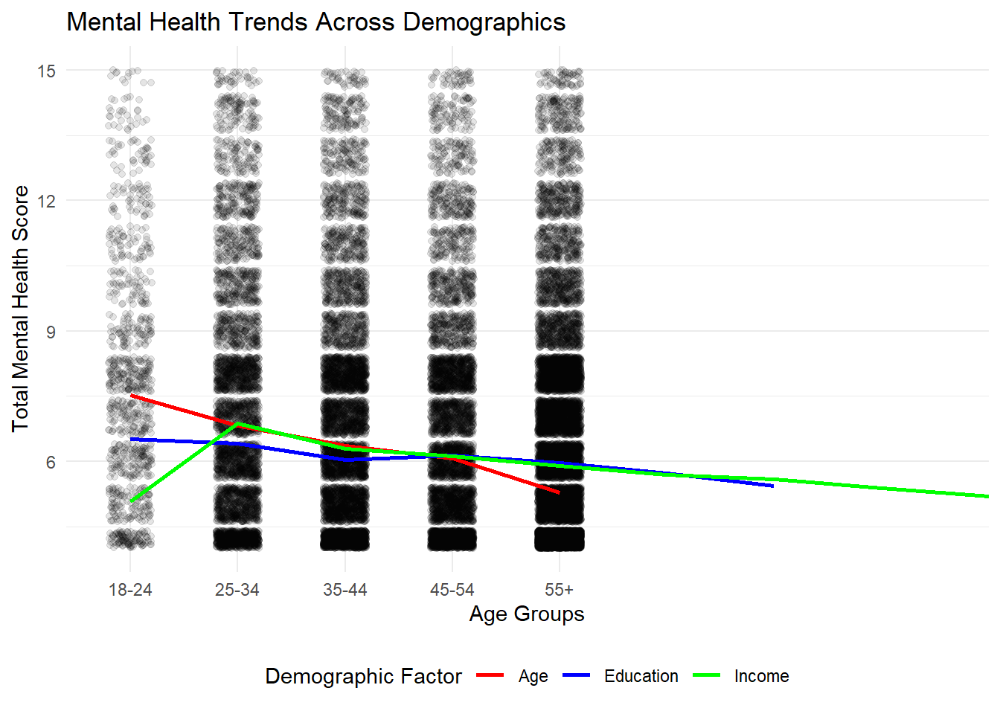
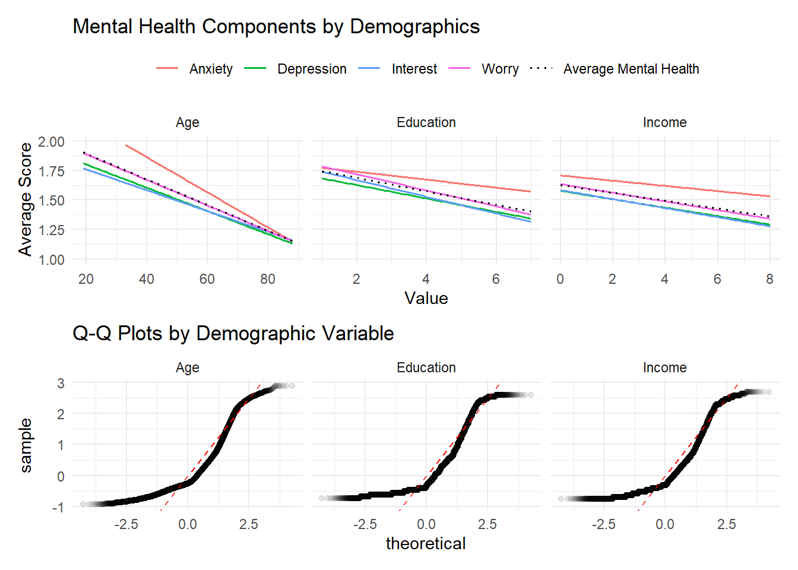

Analysis
Here we provide a detailed analysis using more sophisticated statistics techniques.

Data Analysis
This data analysis on the Household Pulse Survey focuses on understanding the relationships between mental health, mental well being, and various socioeconomic and demographic factors. Data from the Health Resources and Services Administration are incorporated to provide insights into mental health providers across states. The key questions that are being addressed are:
- How do measures of mental well-being (e.g. levels of worry, anxiety and other mental health indicators) change according to age, income, education, race?
- How does access to mental health services vary based on income level, educational attainment and race/ethnicity?
Findings
Summarize the findings here
I. Frequency of Mental Health Symptoms
The Household Pulse Survey collects data on how frequently respondents experience various mental health symptoms, including anxiety, worry, disinterest, and depression. For each symptom, respondents choose from four possible values: 1 (Not at all), 2 (Several days), 3 (More than half the days), and 4 (Nearly every day). These individual responses are then summed to create a mental health score, with a lower score indicating less frequent experience of mental health symptoms.
Basic Analysis
When examining mental health trends across demographics, younger adults (18-24) report higher levels of mental health challenges compared to older age groups, with mental health scores gradually improving as age increases. This may be due to life transitions, academic or career pressures, and the impact of social media, while older individuals may experience more stability in their personal and professional lives, leading to better mental health. However, older adults may also be less likely to admit mental health struggles due to historically stronger stigmas surrounding mental health. It is also important to note that the age category of 18-24 has the least amount of data
The relationship between income and mental health changes: individuals with lower income initially report better mental health, but the mental health score peaks in the lower mid-range incomes. Education levels show a relatively stable relationship with mental health, with a slight downward trend as individuals attain higher levels of education, likely due to cumulative stress and life challenges over time.
These findings highlight the need for further investigation into how age and income intersect with mental health.
Linear Regression Model
Before performing linear regression, the data is prepared via the prepare_data function. This function processes mental health survey data by calculating the average frequencies of anxiety, worry, loss of interest, and depression across age, income, and education level. Then it restructures the data into a long format, where each row represents a specific mental health metric for a particular demographic value.
After the data is prepared for linear regression, the plots are created using the create_plot function. This creates a line plot showing the relationships between mental health metrics and demographic variables (age, income, and education), and Q-Q plots for each relationship.

Linear Regression Analysis
Based on these plots, the demographic variables have the following relationship with the mental health indicators:
- Age: This demographic variable has the strongest relationship among the mental health indicators. Young adults (around age 20) report the highest levels of mental health concerns, with scores around 1.75-2.0, while older adults (80+) report much lower levels, around 1.25.
- Education: There is a moderate negative relationship with mental health issues. As educational attainment increases, reported mental health concerns decrease gradually. However, the slope is less steep than with age, suggesting a weaker effect.
- Income: Higher incomes are associated with slightly lower mental health concerns.
Across all three plots, anxiety constantly demonstrates the highest reported frequency across age, education, and income levels.
Looking at the Q-Q plots, the residuals for all three demographic variables show reasonable normality in the middle ranges, but have some deviations at the tails. Out of the three demographics, age has the most consistent normality across the distribution, suggesting that age is the most reliable predictor of mental health outcomes in this dataset.
The summary statistics for the linear regressions show that older age, higher income, and greater education are all significantly associated with better mental health. However, there is a lot of variance. Age has the strongest effect, with mental health scores decreasing by 0.0117 points per year (p < 0.001), followed by income (-0.0564 per category, p < 2.99e-316), and education (-0.0547 per level, p < 5.76e-148). This aligns with the initial findings in the basic analysis.
II. Access to Mental Health Services
Flaws and Limitations
50f4f57e7ee05a028e285104bb7d6bc038af2ece ## Note on Attribution
In general, you should try to provide links to relevant resources, especially those that helped you. You don’t have to link to every StackOverflow post you used but if there are explainers on aspects of the data or specific models that you found helpful, try to link to those. Also, try to link to other sources that might support (or refute) your analysis. These can just be regular hyperlinks. You don’t need a formal citation.
If you are directly quoting from a source, please make that clear. You can show quotes using > like this
> To be or not to be.To be or not to be.
Rubric: On this page
This comes from the file analysis.qmd.
We describe here our detailed data analysis. This page will provide an overview of what questions you addressed, illustrations of relevant aspects of the data with tables and figures, and a statistical model that attempts to answer part of the question. You’ll also reflect on next steps and further analysis.
The audience for this page is someone like your class mates, so you can expect that they have some level of statistical and quantitative sophistication and understand ideas like linear and logistic regression, coefficients, confidence intervals, overfitting, etc.
While the exact number of figures and tables will vary and depend on your analysis, you should target around 5 to 6. An overly long analysis could lead to losing points. If you want you can link back to your blog posts or create separate pages with more details.
The style of this paper should aim to be that of an academic paper. I don’t expect this to be of publication quality but you should keep that aim in mind. Avoid using “we” too frequently, for example “We also found that …”. Describe your methodology and your findings but don’t describe your whole process.
You will
- Introduce what motivates your Data Analysis (DA)
- Which variables and relationships are you most interested in?
- What questions are you interested in answering?
- Provide context for the rest of the page. This will include figures/tables that illustrate aspects of the data of your question.
- Modeling and Inference
- The page will include some kind of formal statistical model. This could be a linear regression, logistic regression, or another modeling framework.
- Explain the ideas and techniques you used to choose the predictors for your model. (Think about including interaction terms and other transformations of your variables.)
- Describe the results of your modelling and make sure to give a sense of the uncertainty in your estimates and conclusions.
- Explain the flaws and limitations of your analysis
- Are there some assumptions that you needed to make that might not hold? Is there other data that would help to answer your questions?
- Clarity Figures
- Are your figures/tables/results easy to read, informative, without problems like overplotting, hard-to-read labels, etc?
- Each figure should provide a key insight. Too many figures or other data summaries can detract from this. (While not a hard limit, around 5 total figures is probably a good target.)
- Default
lmoutput and plots are typically not acceptable.
- Clarity of Explanations
- How well do you explain each figure/result?
- Do you provide interpretations that suggest further analysis or explanations for observed phenomenon?
- Organization and cleanliness.
- Make sure to remove excessive warnings, hide most or all code, organize with sections or multiple pages, use bullets, etc.
- This page should be self-contained, i.e. provide a description of the relevant data.